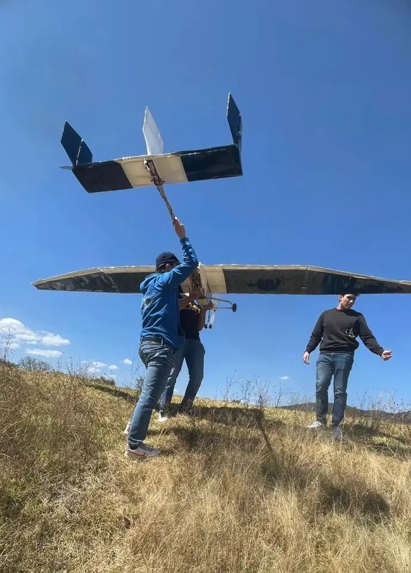

Concept to detailed CAD
I developed the conceptual and theoretical design and personally modeled more than 300 parts within an assembly of over 400 components, including simplified, clean geometry for analysis.
SAE AERO DESIGN WEST · 2025 · BORREGOS CEM
Aircraft design, removable wing joints and structural testing, developed from concept to flight.
Design Captain & Engineering Coordinator

MY CONTRIBUTION
As Design Captain & Engineering Coordinator, I made the aircraft design decisions with research support from a five-person design team. I coordinated more than 40 engineering members across design, structures, electronics and R&D to integrate the aircraft.
I developed the conceptual and theoretical design and personally modeled more than 300 parts within an assembly of over 400 components, including simplified, clean geometry for analysis.
I evaluated mass, center of gravity, materials, geometry, stability, control, propulsion and cargo-bay concepts. My work included CFD, motor and propeller selection, and impact-test design.
01 / MODULAR AIRFRAME
I began this project in my third semester, learning aircraft-design fundamentals in three months before developing Wingull from October to March. The central integration challenge was a large-span aircraft that could be broken down into compact components.
Inspired by RC aircraft, I designed removable joints with three pine alignment pins engaging the adjacent wing section. Electrical connectors served the ailerons. Upper and lower aluminum locking plates were secured with bolts passing through the main spar.
The main spar used a rectangular box section with 6 mm pine upper and lower caps and ¼-inch balsa sidewalls. The joint combined mechanical alignment with a bolted connection across wing sections.
02 / STRUCTURAL TEST
We inverted the complete wing and applied 18 kg of distributed mass to approximate the spanwise lift distribution. The applied load was 1.5 times the weight of the 12 kg design mass.
Measured tip deflection was within 8% of the prediction. The assembled joints allowed the wing to respond similarly to the continuous wooden-beam model under the tested load.
The wing passed the planned load check. Budget constraints ruled out testing to fracture, so the ultimate failure load was not established.
ANALYSIS TO OPERATION
I used drag coefficients from CFD in the final takeoff-run model to estimate allowable payload for the density altitude of the day. Aerodynamic work combined theory, XFLR5 and CFD.
Flight testing took place at Atizapán, where air density could fall to approximately 0.7 kg/m³. An uneven runway and terrain-related wind and turbulence made testing more demanding than the Fort Worth design conditions.
We adjusted the reference takeoff-distance limit to local conditions and checked that the aircraft became airborne before it. We did not collect measured takeoff distances for a quantitative prediction-error comparison.
RESULTS & REFLECTION
Wingull flew at 10 kg total mass: 6 kg empty plus 4 kg of payload. The design target was 12 kg total. Competition time constraints prevented an attempt at that mass; it remains a design target rather than a demonstrated flight result.
| Design | 10th |
|---|---|
| Presentation | 7th |
| Standing before flight rounds | 5th |
| Overall | 18th |
Borregos CEM finished as the highest-ranked Latin American team at this event.
The project brought together design ownership, detailed CAD, interdisciplinary coordination and physical testing.